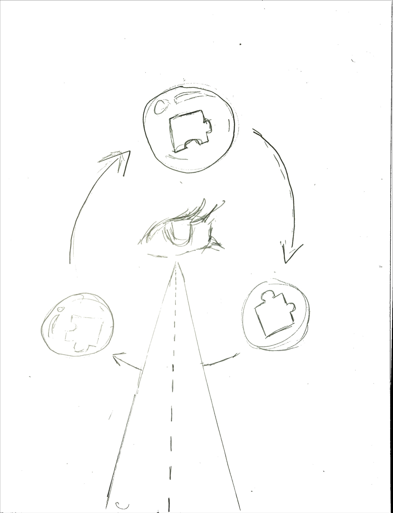
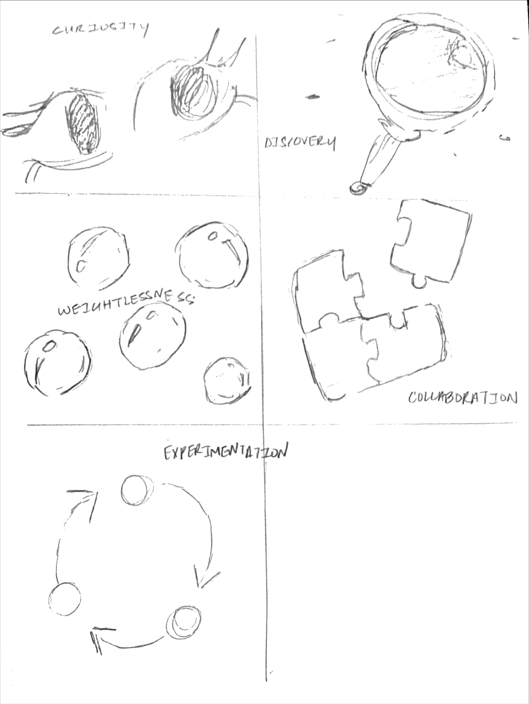
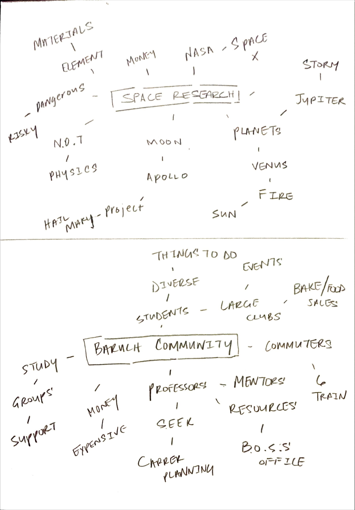
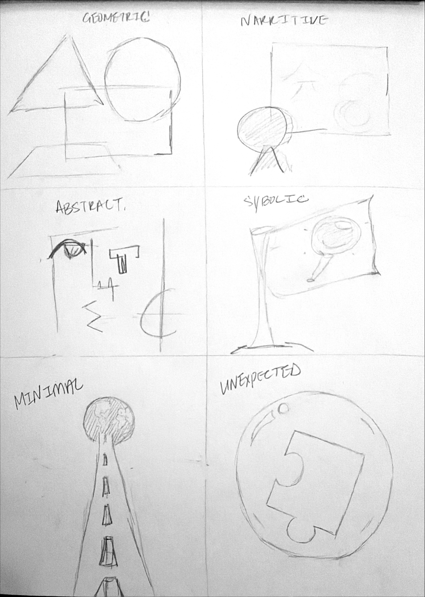

SSEP Mission Patch
From early symbols to a selected concept: exploring collaboration, experimentation, and discovery through hand-drawn mission patch designs.
The selected concept
Curiosity → Discovery

Discovery begins with curiosity
Through collaboration and trial and error, curiosity becomes a path to discovery. The puzzle pieces represent people bringing their ideas together, while the cycle reflects the process of testing, learning, and trying again. Together, these symbols show how shared effort and a willingness to experiment can turn questions into new possibilities.
The process
Three stages of exploration leading to the selected concept. Open any image to see the sketches in detail.
Visual translation


Turning abstract ideas into visual symbols.
View sketches ↗Symbol mapping


Finding connections between symbols and ideas.
View symbol maps ↗Rapid concept generation


Exploring different directions through quick sketches.
View concepts ↗